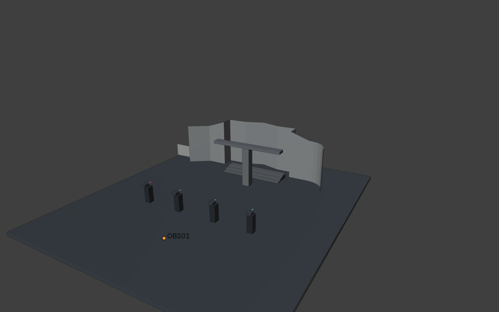
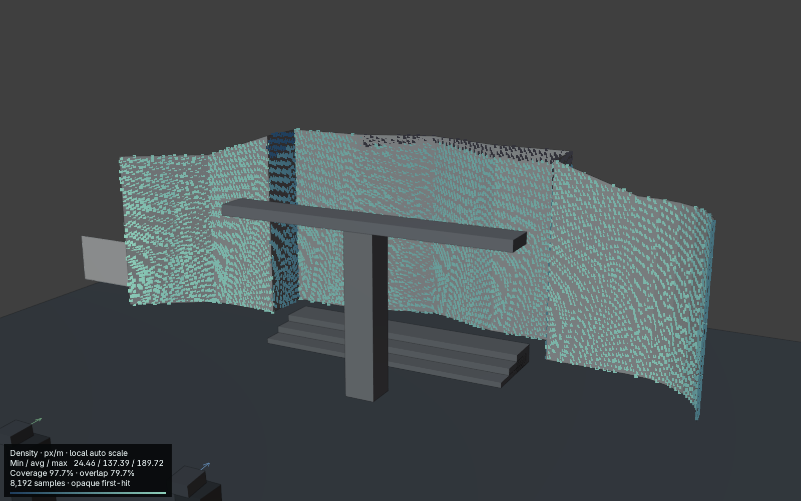
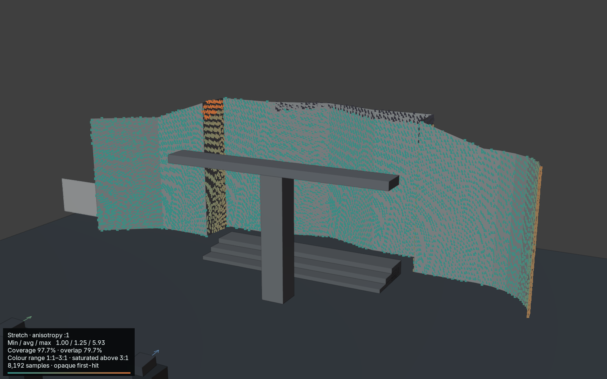
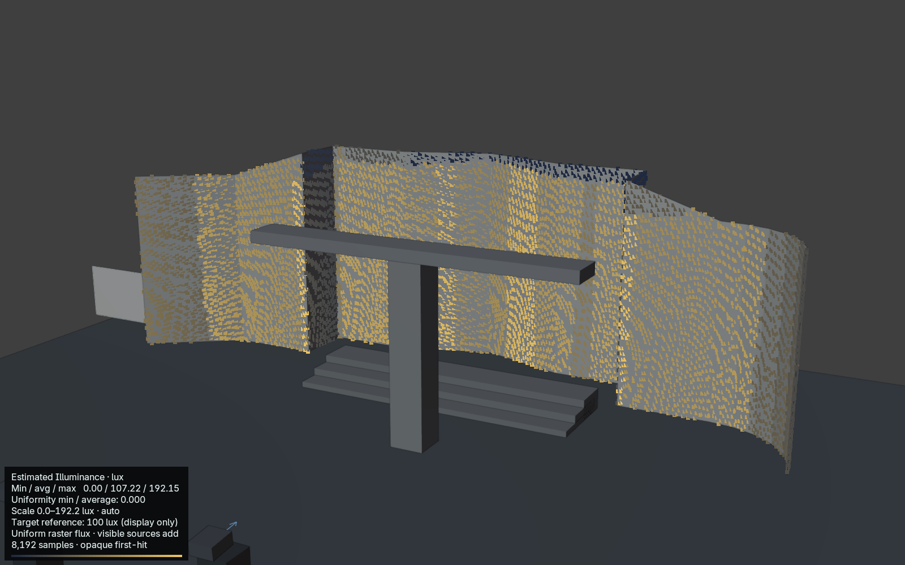
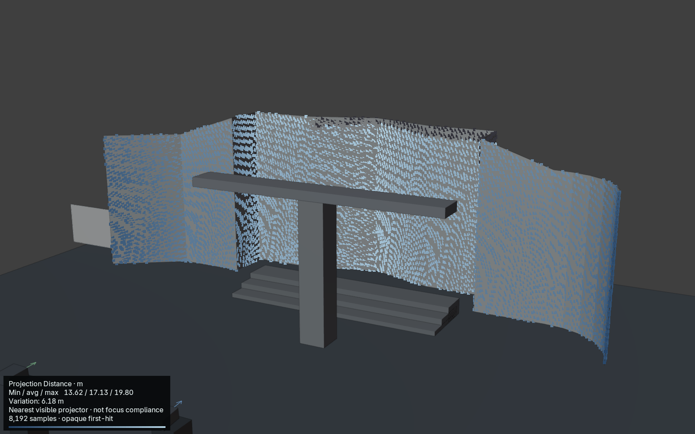
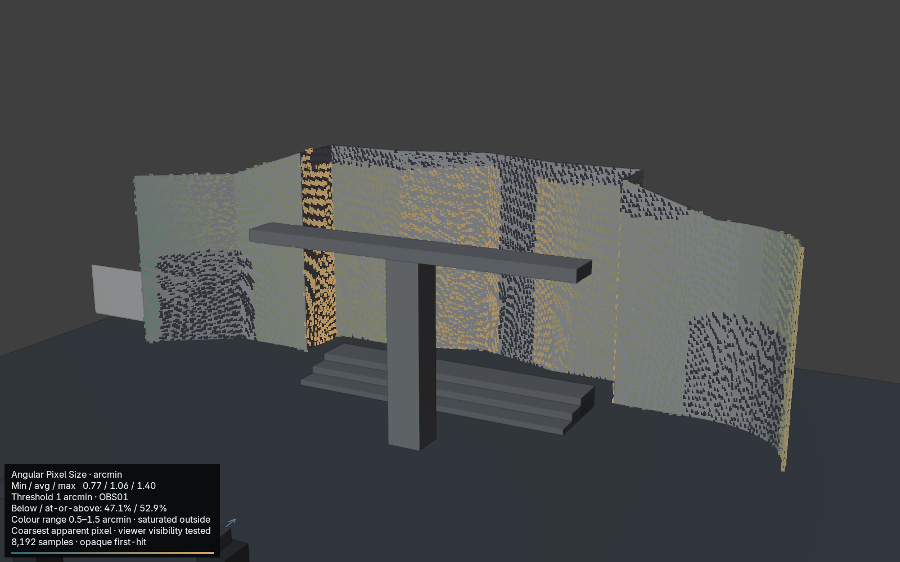

Development beta · 2026-10-25T02:10:40+00:00
Project Name: Civic Hall · Architectural Projection Study · Venue: Disposable irregular facade / audience plaza · Revision: 0.13 Internal Production Beta validation · Author: Twisted Pixel






| ID | Raster | Ratio | Throw m | Image W × H m | px/m | mm/px | H / V shift % | Lumens | Lux | Notes |
|---|---|---|---|---|---|---|---|---|---|---|
| PJ01 | 2716 × 1528 | 0.95 | 16.12 | 16.97 × 9.54 | 160 | 6.25 | +0.0 / +0.0 | 10,000 | 62 | |
| PJ02 | 2716 × 1528 | 0.95 | 18.33 | 19.30 × 10.86 | 141 | 7.10 | +0.0 / +0.0 | 10,000 | 48 | |
| PJ03 | 2716 × 1528 | 0.95 | 18.33 | 19.30 × 10.86 | 141 | 7.10 | +0.0 / +0.0 | 10,000 | 48 | |
| PJ04 | 2716 × 1528 | 0.95 | 16.12 | 16.97 × 9.54 | 160 | 6.25 | +0.0 / +0.0 | 10,000 | 62 |
Shift uses full-image dimensions. Measurements and illuminance are nominal centre values.
| Group | Layout | Pair | Axis | Requested overlap | Actual overlap | Gap m |
|---|---|---|---|---|---|---|
| Facade projectors | HORIZONTAL | PJ01 / PJ02 | H | 679 px / 4.24 m | 2,050 px / 12.81 m | — |
| Facade projectors | HORIZONTAL | PJ02 / PJ03 | H | 679 px / 4.24 m | 1,941 px / 12.12 m | — |
| Facade projectors | HORIZONTAL | PJ03 / PJ04 | H | 679 px / 4.24 m | 1,955 px / 12.21 m | — |
Adjacent-pair overlap is measured on the group reference plane.
| ID | Width m | Height m | Aspect | Notes |
|---|---|---|---|---|
| SCR001 | 3.00 | 2.00 | 1.50 |
| Receiver | Samples | Area m² | Visible coverage | Overlap / surface | Min / avg / max px/m | Max anisotropy | Occluded samples |
|---|---|---|---|---|---|---|---|
| Civic Hall · Facade Receiver | 8192 | 215.35 | 97.7% | 79.7% | 24 / 137 / 190 | 5.93:1 | 2.3% |
Estimated Illuminance · lux · Min / avg / max 0.00 / 107.22 / 192.15 · Uniformity min / average: 0.000 · Scale 0.0–192.2 lux · auto · Target reference: 100 lux (display only) · Uniform raster flux · visible sources add · 8,192 samples · opaque first-hit
Projection Distance · m · Min / avg / max 13.62 / 17.13 / 19.80 · Variation: 6.18 m · Nearest visible projector · not focus compliance · 8,192 samples · opaque first-hit
Angular Pixel Size · arcmin · Min / avg / max 0.77 / 1.06 / 1.40 · Threshold 1 arcmin · OBS01 · Below / at-or-above: 47.1% / 52.9% · Colour range 0.5–1.5 arcmin · saturated outside · Coarsest apparent pixel · viewer visibility tested · 8,192 samples · opaque first-hit
Density is conservative worst-direction density. Overlap is a percentage of total surface area.
Nominal projector measurements do not guarantee visible coverage. Surface analysis is sampled, two-sided opaque evaluated geometry; thin occluders and between-sample regions remain untested. Estimated incident illuminance is not photometrically calibrated.
Structured source: beam-study.json. UUIDs identify records; labels are presentation only.